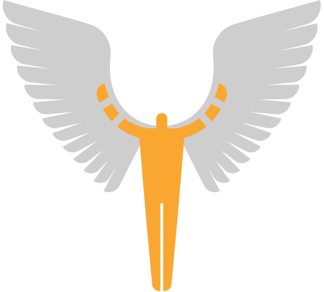

Primo unifica el acceso al ecosistema de conocimiento del Politécnico. Desde un solo punto, conectamos a nuestra comunidad con la vanguardia de la investigación global, recursos digitales y la memoria institucional.
Nueva versión del descubridor Primo: Queremos invitarte a conocer la nueva experiencia de búsqueda. Hemos actualizado nuestra plataforma para ofrecerte una interfaz más ágil, visual y fácil de usar.
Lo último en nuestra colección.
DescubrirAcceso a libros electrónicos y bases de datos académicas.
Conectar
Conocimiento y memoria institucional.
BuscarPublicaciones periódicas institucionales.
Leer ahora